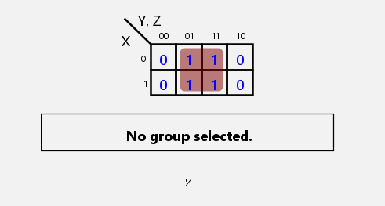
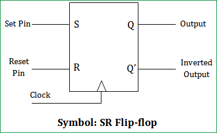

Comprehensive Answers for 3-Mark Question Themes
Detailed explanations for frequently encountered 3-mark question themes. Illustrative frequencies and example paper mentions (S=Summer, W=Winter) are based on analysis of the provided syllabus and past papers.
(Illustrative Frequency: ~3, Example Papers: S2024, W2023, S2022)
Various Logic Families:
Logic families are collections of integrated circuits (ICs) that share common electrical characteristics such as logic levels, power supply voltages, and input/output structures, allowing them to be interconnected directly. Key logic families include:
Characteristics of Digital ICs:
Key parameters used to characterize digital ICs include:
(Illustrative Frequency: ~4, Example Papers: W2024, S2024 (OR), W2021, W2019 (OR))
The **race-around condition** is an undesirable phenomenon that can occur in **level-triggered JK flip-flops** (as opposed to edge-triggered ones). It specifically happens when both the J and K inputs are held HIGH (logic 1) simultaneously – the condition under which the flip-flop is supposed to toggle its output state.
Explanation of the Condition:
The final state of the flip-flop when the clock pulse eventually goes to its inactive level becomes unpredictable and unreliable, as it depends on how many times the output toggled during the active clock period. This makes the circuit's behavior indeterminate under these specific conditions.
Conditions Leading to Race-Around:
Avoidance: The race-around condition is typically avoided by using **edge-triggered JK flip-flops** or **Master-Slave JK flip-flops**, which ensure that the output changes only once per clock cycle based on the input conditions at the triggering clock edge.
(Illustrative Frequency: ~3, Example Papers: S2024, W2024, W2023)
Static RAM (SRAM) and Dynamic RAM (DRAM) are both types of volatile semiconductor Random Access Memory (RAM), meaning they require continuous power to retain stored data. However, they differ significantly in their underlying technology, cell structure, performance characteristics, and typical applications.
| Feature / Parameter | Static RAM (SRAM) | Dynamic RAM (DRAM) |
|---|---|---|
| 1. Storage Cell Structure | Uses flip-flops (typically constructed from 4 to 6 transistors) to store each bit. Data is held as long as power is supplied. | Uses a single transistor and a capacitor to store each bit. Data is stored as an electrical charge on the capacitor. |
| 2. Data Retention | Holds data as long as power is on; no periodic refreshing is needed. "Static" refers to this stability. | Data is stored as charge on a capacitor which gradually leaks away. Therefore, DRAM cells must be periodically refreshed (read and rewritten) to retain data, typically every few milliseconds. "Dynamic" refers to this need for refreshing. |
| 3. Cell Complexity & Size | More complex cell structure due to multiple transistors per bit, resulting in a larger cell size on the silicon die. | Simpler and smaller cell structure (one transistor, one capacitor per bit), allowing for significantly higher packing density. |
| 4. Density | Lower packing density. Fewer bits can be stored per unit area of silicon. | Higher packing density. Significantly more bits can be stored on a chip of the same size, leading to larger capacity memory chips. |
| 5. Speed (Access Time) | Generally faster access times (e.g., typically ranging from less than 1 ns to a few tens of nanoseconds). No refresh cycles means data is always immediately available for read/write. | Generally slower access times compared to SRAM (e.g., typically ranging from a few tens to over a hundred nanoseconds for initial access, though techniques like burst mode and SDRAM improve throughput for sequential access). Refresh cycles also introduce latency. |
| 6. Cost per Bit | Higher cost per bit due to lower density and more complex manufacturing process for the larger cells. | Lower cost per bit due to higher density and simpler cell structure, making it more economical for large memory systems. |
| 7. Power Consumption | Higher static power consumption because the flip-flops continuously draw some current to maintain their state (though modern SRAMs have low-power standby modes). Dynamic power is also consumed during access. | Lower static power consumption (mainly due to leakage from capacitors and the refresh circuitry when idle). However, dynamic power consumption during read/write operations and especially during refresh cycles can be significant. |
| 8. Refresh Circuitry | Not required. | Requires external or on-chip refresh circuitry and control logic to periodically recharge the capacitors, adding complexity to the memory system design and control. |
| 9. Typical Applications | Cache memory (L1, L2, L3 caches in CPUs and microcontrollers), register files, high-speed buffers, and specific application memories where very fast access times are critical and capacity is smaller. | Main system memory (RAM) in personal computers, servers, and workstations; graphics memory (GDDR); memory in mobile devices, and other applications where large memory capacity at a lower cost is the primary concern. |
(Illustrative Frequency: ~2, Example Papers: S2024, W2023)
To reduce a Boolean expression, we can use Boolean algebra postulates, theorems, and techniques like Karnaugh maps (K-maps) or the Quine-McCluskey method. For a 3-variable expression, Boolean algebra or a K-map is usually sufficient.
Given Expression: F = x'y'z + yz + xz
Method 1: Using Boolean Algebra
Method 2: Using K-Map (for 3 variables x, y, z)
First, identify the minterms for each product term:
So, the function in terms of minterms is F(x,y,z) = Σm(1, 3, 5, 7).
Now, draw the K-map for 3 variables (let x be the row variable, yz be the column variables):
Grouping the 1s:
We can form a single large group (a quad) of four 1s covering minterms m1, m3, m5, and m7. This group corresponds to the cells where:
Thus, the simplified expression from the K-map is F = z.
K-Map Visualization:
The K-map would visually show the four 1s forming a column, which simplifies to the variable 'z'.
Both methods (Boolean algebra and K-map) yield the same simplified result: F = z.
(Illustrative Frequency: ~2, Example Papers: W2022, W2019)
The **SR (Set-Reset) flip-flop** is a basic bistable multivibrator, meaning it has two stable states and can store one bit of information. It has two inputs: S (Set) and R (Reset), and typically two outputs: Q (the normal output) and Q' (the complemented output). The SR flip-flop can be level-triggered (asynchronous, often called an SR latch) or clocked (synchronous).
Operation (assuming a clocked SR flip-flop):
Characteristic Table (for a clocked SR Flip-Flop):
Defines the next state (Qn+1) based on current inputs (S, R) and current state (Qn) at the active clock edge.
| S | R | Qn | Qn+1 | Operation |
|---|---|---|---|---|
| 0 | 0 | 0 | 0 | No Change (Hold) |
| 0 | 0 | 1 | 1 | No Change (Hold) |
| 0 | 1 | 0 | 0 | Reset |
| 0 | 1 | 1 | 0 | Reset |
| 1 | 0 | 0 | 1 | Set |
| 1 | 0 | 1 | 1 | Set |
| 1 | 1 | 0 | X (or Indeterminate) | Forbidden / Invalid |
| 1 | 1 | 1 | X (or Indeterminate) | Forbidden / Invalid |
(X indicates an invalid or indeterminate state for Qn+1 when S=R=1).
Characteristic Equation:
Assuming the S=R=1 condition is avoided (i.e., S⋅R = 0 is always true), the characteristic equation can be derived from the K-map or truth table:
Qn+1 = S + R'Qn (This equation is valid under the constraint S⋅R = 0).
If the S=R=1 case is considered and leads to Q=Q'=0 (for NOR latch based) or Q=Q'=1 (for NAND latch based), the equation becomes more complex or is usually handled by ensuring the forbidden state is not entered.
Logic Diagram (Conceptual Block): The standard symbol for a clocked SR flip-flop is a rectangle with input lines for S, R, and CLK (the clock input often has a small triangle to indicate it's edge-triggered). It has output lines Q and Q'.
(Illustrative Frequency: ~2, Example Papers: S2024 (OR), W2019)
The specifications of a Digital-to-Analog Converter (DAC) define its performance and characteristics. Key specifications include:
Resolution:
Accuracy:
Linearity:
Monotonicity:
Settling Time (ts):
Full-Scale Output Voltage (VFS):
(Illustrative Frequency: ~1, Example Papers: S2022 (OR))
Minterms and Maxterms are fundamental concepts in Boolean algebra used to express Boolean functions in standard or canonical forms. They provide a unique way to represent a function based on its truth table for a given set of 'n' variables.
Minterm (Product Term):
Maxterm (Sum Term):
It's important to note that a minterm mi and a maxterm Mi with the same index are complements of each other: mi' = Mi and Mi' = mi.
(Illustrative Frequency: ~3, Example Papers: S2023, W2022, S2021)
Universal Gates:
In digital logic, a **universal gate** is a type of logic gate that can be used, by itself or in combination with only other gates of the same type, to implement any other type of basic logic gate (AND, OR, NOT) or any arbitrary Boolean function. The ability to construct all fundamental logic operations using only a specific type of gate makes that gate "universal."
The primary universal gates are:
Significance of Universal Gates:
(Illustrative Frequency: ~2, Example Papers: W2024, S2023)
Fan-in and Fan-out are important parameters that characterize the input and output capabilities of digital logic gates, respectively. They are crucial considerations in digital circuit design for ensuring proper operation and interfacing between gates.
Fan-in:
Fan-out:
(Illustrative Frequency: ~3, Example Papers: S2024, W2023, W2022)
To convert a binary number (base-2) to its decimal equivalent (base-10), each digit of the binary number is multiplied by 2 raised to the power of its position, and the results are summed up. The position is determined relative to the binary point (radix point).
Formula:
If a binary number is represented as (bnbn-1...b1b0 . b-1b-2...b-m)2, its decimal equivalent is:
Decimal Value = (bn × 2n) + (bn-1 × 2n-1) + ... + (b1 × 21) + (b0 × 20) + (b-1 × 2-1) + (b-2 × 2-2) + ... + (b-m × 2-m)
Example 1: Convert binary integer (11010)2 to decimal.
The binary number is 11010.
Decimal Value = (1 × 24) + (1 × 23) + (0 × 22) + (1 × 21) + (0 × 20)
= (1 × 16) + (1 × 8) + (0 × 4) + (1 × 2) + (0 × 1)
= 16 + 8 + 0 + 2 + 0
= 26
So, (11010)2 = (26)10.
Example 2: Convert binary number with fraction (1011.011)2 to decimal.
Integer part: 1011
Integer Decimal Value = 8 + 0 + 2 + 1 = 11.
Fractional part: .011
Fractional Decimal Value = 0 + 0.25 + 0.125 = 0.375.
Combining the integer and fractional parts:
Total Decimal Value = 11 + 0.375 = 11.375
So, (1011.011)2 = (11.375)10.
(Illustrative Frequency: ~2, Example Papers: S2023, W2021)
A **Multiplexer (MUX)**, often abbreviated as MUX and also known as a **data selector**, is a combinational logic circuit that selects one of several analog or digital input signals and forwards the selected input to a single output line. The selection of a particular input line to be routed to the output is controlled by a set of **select lines** (or control inputs).
Key Characteristics and Operation:
Working Principle (Example: 4:1 MUX):
A 4:1 MUX has four data inputs (I0, I1, I2, I3) and two select lines (S1, S0). The output Y is determined as follows:
| S1 | S0 | Selected Input | Output Y |
|---|---|---|---|
| 0 | 0 | I0 | Y = I0 |
| 0 | 1 | I1 | Y = I1 |
| 1 | 0 | I2 | Y = I2 |
| 1 | 1 | I3 | Y = I3 |
The Boolean expression for a 4:1 MUX is: Y = S1'S0'I0 + S1'S0I1 + S1S0'I2 + S1S0I3
Block Diagram of a 4:1 MUX:
A rectangular block labeled "MUX 4:1".
(Illustrative Frequency: ~1, Example Papers: S2022)
Counters are fundamental sequential logic circuits that go through a predetermined sequence of states upon the application of input pulses (typically clock pulses). They have a wide range of applications in digital systems and electronics. Some key applications include:
(Illustrative Frequency: ~2, Example Papers: W2024, S2023)
Gray Code:
Gray code, also known as Reflected Binary Code (RBC) after its inventor Frank Gray, is a binary numeral system where two successive values differ in only one bit (binary digit). This property is also called the "minimum change" or "unit distance" property.
Unlike standard binary code (natural binary code), where multiple bits can change when incrementing from one value to the next (e.g., from 0111 (7) to 1000 (8) all four bits change), Gray code ensures that only a single bit flip occurs between consecutive code words.
Key Characteristics:
Example of a 4-bit Gray Code Sequence (compared to Binary):
| Decimal | Binary Code | Gray Code | Bits Changed from Previous Gray Code |
|---|---|---|---|
| 0 | 0000 | 0000 | - |
| 1 | 0001 | 0001 | 1 (LSB) |
| 2 | 0010 | 0011 | 1 (Bit 1) |
| 3 | 0011 | 0010 | 1 (LSB) |
| 4 | 0100 | 0110 | 1 (Bit 2) |
| 5 | 0101 | 0111 | 1 (LSB) |
| 6 | 0110 | 0101 | 1 (Bit 1) |
| 7 | 0111 | 0100 | 1 (LSB) |
| 8 | 1000 | 1100 | 1 (MSB) |
| 9 | 1001 | 1101 | 1 (LSB) |
Conversion Example (Binary to Gray):
To convert an n-bit binary number B = Bn-1Bn-2...B1B0 to an n-bit Gray code G = Gn-1Gn-2...G1G0:
Example: Convert binary 1011 to Gray code.
So, binary (1011)2 is (1110)Gray.
Applications:
(Illustrative Frequency: ~1, Example Papers: W2022)
An **AND gate** is a basic digital logic gate that implements logical conjunction – it returns a HIGH output (logic 1) only if all of its inputs are HIGH (logic 1). If any of its inputs are LOW (logic 0), the output will be LOW (logic 0).
Logic Symbol:
The standard logic symbol for an AND gate depends on the number of inputs. For a 2-input AND gate:
The symbol is typically D-shaped.
For a 3-input AND gate, there would be three input lines on the flat side.
Truth Table (for a 2-input AND gate):
The truth table defines the output Y for all possible combinations of inputs A and B.
| Input A | Input B | Output Y (A ⋅ B) |
|---|---|---|
| 0 | 0 | 0 |
| 0 | 1 | 0 |
| 1 | 0 | 0 |
| 1 | 1 | 1 |
Boolean Expression:
The logical operation of an AND gate is represented by the dot (⋅) symbol or sometimes by no symbol between variables (like multiplication).
For a 2-input AND gate: Y = A ⋅ B (or Y = AB)
For a 3-input AND gate with inputs A, B, C: Y = A ⋅ B ⋅ C (or Y = ABC)
Explanation:
The AND gate is fundamental in digital logic. It is used in various applications such as:
(Illustrative Frequency: ~2, Example Papers: S2024, W2021)
Propagation Delay (tp) in Logic Gates:
Propagation delay is a fundamental performance characteristic of digital logic gates and integrated circuits (ICs). It quantifies the time it takes for a change in an input signal to produce a corresponding change in the output signal of the gate.
Definition:
More precisely, propagation delay is typically measured as the time interval between the point when the input signal crosses a specific voltage threshold (usually 50% of its total logic swing) and the point when the output signal crosses its corresponding 50% voltage threshold.
Due to differences in internal transistor switching characteristics for rising and falling edges, two distinct propagation delays are often specified:
The overall or average propagation delay for a gate is often calculated as:
tp = (tpLH + tpHL) / 2
Significance:
Factors Affecting Propagation Delay:
Unit: Propagation delay is typically measured in nanoseconds (ns) or picoseconds (ps).
(Illustrative Frequency: ~1, Example Papers: S2023)
A **Decoder** is a combinational logic circuit that converts a binary input code (typically 'n' bits) into a set of output signals, where only one of the output lines (or a specific combination) is activated for each unique input code. Essentially, it "decodes" the binary input into a more recognizable or usable format.
Key Characteristics:
Common Types:
Block Diagram of a 2-to-4 Line Decoder:
A rectangular block labeled "Decoder 2x4".
Applications:
(Illustrative Frequency: ~2, Example Papers: W2024, S2022)
A **shift register** is a sequential logic circuit composed of a cascade of flip-flops, sharing a common clock, in which the binary information stored in the flip-flops can be shifted from one flip-flop to the next with each clock pulse. Shift registers are primarily classified based on how data is loaded into them (serial or parallel) and how data is retrieved from them (serial or parallel).
The main types of shift registers are:
SISO (Serial-In, Serial-Out):
SIPO (Serial-In, Parallel-Out):
PISO (Parallel-In, Serial-Out):
PIPO (Parallel-In, Parallel-Out):
Universal Shift Register:
Bidirectional Shift Register:
Shift registers are fundamental components in digital systems for data storage, data movement, data conversion (serial-to-parallel and parallel-to-serial), and in constructing counters like ring counters and Johnson counters.
(Illustrative Frequency: ~1, Example Papers: W2023)
Volatile Memory:
In the context of computer storage and digital electronics, **volatile memory** is a type of computer memory that requires continuous electrical power to maintain the stored information. If the power supply is interrupted or turned off, the data stored in volatile memory is lost.
Key Characteristics:
Common Examples of Volatile Memory:
Contrast with Non-Volatile Memory:
Non-volatile memory, on the other hand, retains its stored information even when the power is turned off. Examples include Read-Only Memory (ROM), flash memory (used in SSDs, USB drives), hard disk drives (HDDs), and optical discs (CDs, DVDs, Blu-ray).
In summary, "volatile" signifies that the memory's contents are temporary and dependent on a continuous power supply.
(Illustrative Frequency: ~2, Example Papers: S2024, W2022)
Combinational and sequential circuits are the two fundamental categories of digital logic circuits. They differ primarily in how their outputs are determined and whether they possess memory capabilities.
| Feature | Combinational Circuits | Sequential Circuits |
|---|---|---|
| 1. Output Dependency | The output at any instant of time depends only on the present input values at that instant. | The output at any instant of time depends not only on the present input values but also on the past history of inputs (i.e., the present state of the circuit). |
| 2. Memory Elements | Do not have memory elements. They cannot store any information about past inputs. | Contain memory elements (like flip-flops or latches) to store information about the past state of the circuit. |
| 3. Feedback Path | Generally, do not have feedback paths from output back to input (except in some specific cases like latches which can be considered simple sequential circuits or complex combinational ones depending on perspective). | Typically have feedback paths from the output of memory elements to the input of the combinational logic part, which determines the next state and outputs. |
| 4. Clock Input | Usually do not require a clock signal for their operation (they operate asynchronously based on input changes). | Often (but not always, e.g., asynchronous sequential circuits) require a clock signal to synchronize state changes and operations. These are called synchronous sequential circuits. |
| 5. Circuit Complexity | Generally simpler to design and analyze for a given function. | Generally more complex to design and analyze due to the state behavior and timing considerations. |
| 6. Speed of Operation | Typically faster as the output changes almost immediately (after propagation delays) with input changes. | Operation is often governed by clock speed. State transitions occur at clock edges, which can introduce more overall delay compared to purely combinational paths. |
| 7. Design Approach | Designed using truth tables, Boolean algebra, K-maps to derive logic expressions for outputs directly from inputs. | Designed using state diagrams, state tables, excitation tables for flip-flops, K-maps for flip-flop inputs and output logic. |
| 8. Examples | Adders (Half Adder, Full Adder), Subtractors, Multiplexers (MUX), Demultiplexers (DEMUX), Encoders, Decoders, Code Converters, Comparators. | Flip-Flops (SR, JK, D, T), Latches, Counters (Ripple, Synchronous), Registers (Shift Registers, Storage Registers), Finite State Machines (FSMs), Memory units (RAM, ROM components). |
(Illustrative Frequency: ~2, Example Papers: S2023, W2021)
BCD (Binary Coded Decimal) Code:
BCD is a system of representing decimal digits (0 through 9) using a 4-bit binary code. Instead of converting an entire decimal number into its pure binary equivalent, each decimal digit is individually converted to its 4-bit binary representation. The most common BCD scheme is the **8421 code**, where the weights of the four bits are 8, 4, 2, and 1, from the Most Significant Bit (MSB) to the Least Significant Bit (LSB).
Key Characteristics:
BCD Representation Table (8421 Code):
| Decimal Digit | BCD Code (B3B2B1B0) |
|---|---|
| 0 | 0000 |
| 1 | 0001 |
| 2 | 0010 |
| 3 | 0011 |
| 4 | 0100 |
| 5 | 0101 |
| 6 | 0110 |
| 7 | 0111 |
| 8 | 1000 |
| 9 | 1001 |
Representing Decimal 7 in BCD:
To represent the decimal digit 7 in BCD, we look up its 4-bit binary equivalent from the table above.
The BCD code for decimal 7 is 0111.
If we were to represent a multi-digit decimal number, each digit would be converted to its 4-bit BCD equivalent separately. For example: